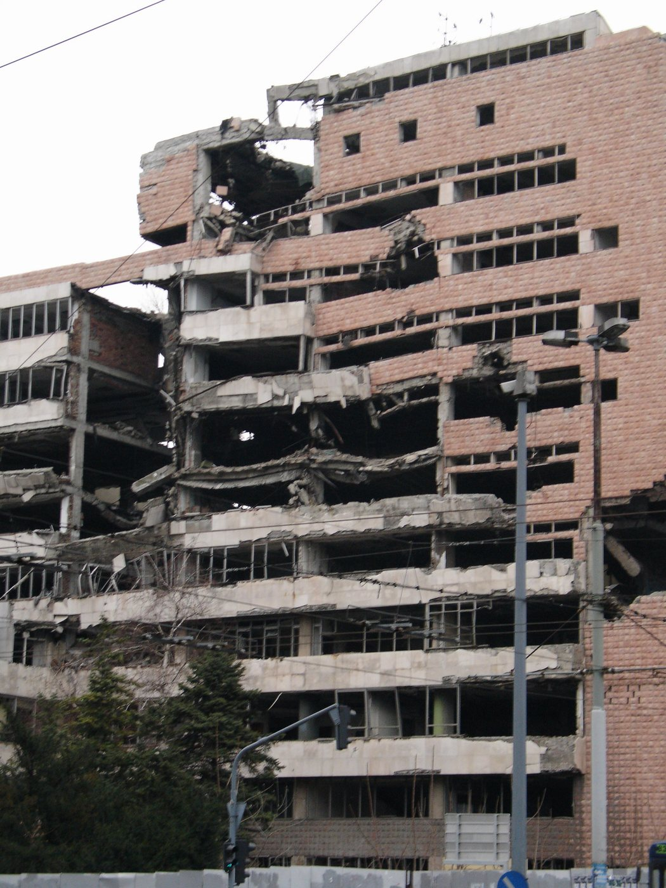

La Serbia dagli anni Novanta a oggi: guerra, memoria e dissenso
La memoria serba degli anni Novanta comprende guerre, bombardamenti, lutti, migrazioni e profonde divisioni politiche. Per affrontarla con serietà occorre tenere insieme esperienze civili differenti e distinguere le azioni di governi, forze armate e singoli cittadini.
Il saggio colloca il caso del Kosovo e la campagna aerea NATO del 1999 nella più ampia dissoluzione jugoslava, senza pretendere di ricostruire ogni fronte e ogni esperienza. Accosta tre piani spesso separati nella memoria pubblica: le guerre del 1991–1995, il dissenso civile sviluppatosi in Serbia e la crisi del Kosovo. L’obiettivo è seguire le fonti, distinguere responsabilità individuali e istituzionali e non ridurre nessuna popolazione a un’unica esperienza.

La dissoluzione jugoslava e le guerre del 1991–1995
La Serbia degli anni Novanta non può essere compresa isolando il Kosovo dagli altri conflitti seguiti alla dissoluzione della Jugoslavia. Le guerre in Croazia e in Bosnia-Erzegovina ebbero dinamiche, attori e cronologie proprie. Tribunali internazionali hanno giudicato singoli responsabili per crimini commessi in diversi contesti; tali sentenze riguardano persone e condotte provate in aula, non la colpa collettiva dei serbi o di un’altra comunità. La ricostruzione del Tribunale penale internazionale per l’ex Jugoslavia permette di orientarsi fra i conflitti e le sue pronunce definitive precisano i fatti accertati nei singoli processi (quadro dei conflitti; elenco delle sentenze).
Bosnia-Erzegovina e Srebrenica
Nel luglio 1995, a Srebrenica, forze dell’Esercito della Republika Srpska uccisero migliaia di uomini e ragazzi bosgnacchi. La Corte internazionale di giustizia, nel giudizio Bosnia-Erzegovina contro Serbia e Montenegro del 2007, qualificò come genocidio quello commesso a Srebrenica e stabilì che la Serbia aveva violato l’obbligo di prevenirlo e quello di cooperare pienamente con il Tribunale. La Corte non ritenne invece provato che il genocidio fosse giuridicamente attribuibile alla Serbia, né che lo Stato avesse commesso, cospirato o fosse complice del genocidio ai sensi della Convenzione. Questa distinzione — fra i crimini accertati, la responsabilità penale individuale e la responsabilità internazionale dello Stato — è essenziale per una narrazione precisa (sentenza della Corte internazionale di giustizia, 26 febbraio 2007).
Il riconoscimento giudiziario di Srebrenica non cancella le vittime di altri gruppi né trasforma la popolazione serba in un soggetto collettivamente responsabile. Allo stesso modo, ricordare le vittime serbe non può essere usato per negare o attenuare il genocidio e gli altri crimini accertati. La memoria pubblica diventa più affidabile quando conserva la specificità di ogni esperienza e lascia le responsabilità a chi le fonti e i tribunali hanno potuto attribuire.
Il dissenso civile in Serbia: 1996–2000
La storia degli anni Novanta comprende anche le mobilitazioni interne alla Serbia. Dopo le elezioni municipali del novembre 1996, l’annullamento di risultati favorevoli all’opposizione provocò proteste estese e in larga parte pacifiche, con la partecipazione di cittadini e studenti. Una delegazione dell’OSCE verificò la vittoria dell’opposizione in quattordici città; il rapporto del relatore speciale delle Nazioni Unite documenta sia le manifestazioni sia le restrizioni ai media indipendenti (rapporto ONU E/CN.4/1997/56).
Nel 2000, una nuova mobilitazione seguì la contestazione dei risultati delle elezioni federali e culminò nelle manifestazioni del 5 ottobre a Belgrado e nel trasferimento del potere. La ricostruzione istituzionale dell’Assemblea nazionale serba registra la conferma della vittoria di Vojislav Koštunica e gli atti parlamentari successivi (storia dell’Assemblea nazionale della Serbia). Questi episodi ricordano che la società serba non fu soltanto spettatrice delle decisioni del governo: al suo interno operarono opposizione, studenti, giornalisti e cittadini che contestarono l’autoritarismo e chiesero il rispetto del voto.
Il Kosovo prima della campagna aerea
La crisi del Kosovo aveva radici anteriori ai bombardamenti. Nel corso degli anni Novanta si aggravarono le tensioni fra le autorità serbe e jugoslave e la maggioranza albanese del Kosovo; si verificarono repressione, violazioni dei diritti, insurrezione armata e violenze contro civili. Human Rights Watch documenta abusi e violazioni del diritto umanitario compiuti da diversi attori, pur concentrando il rapporto Under Orders sulla campagna di uccisioni, espulsioni forzate e persecuzioni condotta dalle forze serbe e jugoslave contro gli albanesi del Kosovo nel 1999.
La campagna aerea NATO iniziò il 24 marzo 1999 e terminò a giugno, dopo l’accordo che portò al ritiro delle forze serbe e jugoslave e all’ingresso della KFOR. In quei mesi molte famiglie in Serbia vissero allarmi, rifugi, interruzioni della vita quotidiana e distruzione di infrastrutture. In Kosovo centinaia di migliaia di albanesi furono espulsi o costretti a fuggire, mentre civili di più comunità subirono violenze. La sequenza e la scala degli eventi vanno ricostruite attraverso fonti distinte, non fuse in una sola narrazione.
Bombardamenti e vittime civili
Le stime sulle vittime civili della campagna aerea variano secondo il metodo e gli episodi conteggiati. Human Rights Watch stimò fra 488 e 527 civili uccisi; Amnesty International pubblicò una stima di circa 500 morti e 900 feriti. Sono stime attribuite a queste organizzazioni e non un conteggio definitivo condiviso da tutti gli archivi.
Le organizzazioni per i diritti umani criticarono attacchi in cui, a loro giudizio, non furono rispettati adeguatamente gli obblighi di protezione dei civili. Amnesty International concluse che alcuni attacchi avevano causato uccisioni illecite; Human Rights Watch documentò vittime civili e valutò specifici episodi. Il rapporto del comitato del Tribunale penale internazionale per l’ex Jugoslavia esaminò le denunce sulla campagna e raccomandò di non aprire un’indagine penale. Tale decisione riguardava l’apertura di un’indagine sui possibili crimini di guerra; non fu una sentenza complessiva sulla legalità dell’intervento militare.
Queste valutazioni vanno lette per ciò che sono: Amnesty e Human Rights Watch sono organizzazioni di documentazione e advocacy; il comitato del Tribunale era un organo di valutazione preliminare del procuratore, non una corte che celebrò un processo sulla campagna. Riferire le loro conclusioni con precisione permette di discutere gli attacchi senza attribuire a una fonte un verdetto che non ha emesso.
Le vittime e le responsabilità nel conflitto
La sofferenza dei civili durante i bombardamenti non cancella la persecuzione e i crimini commessi contro gli albanesi del Kosovo dalle forze serbe e jugoslave. Il rapporto di Human Rights Watch del 2001 documenta uccisioni, torture, stupri e deportazioni forzate durante la campagna del 1999. Lo stesso rapporto esamina abusi del Kosovo Liberation Army, inclusi sequestri e uccisioni, e violazioni compiute dalla NATO. Human Rights Watch documentò inoltre le violenze contro serbi, rom e altre minoranze dopo il ritiro delle forze serbe e jugoslave.
Ricordare queste vicende nello stesso contributo non significa dichiararle equivalenti per scala, finalità o responsabilità. Significa rifiutare una memoria selettiva: la sofferenza di una comunità non deve diventare il prezzo del silenzio sulla sofferenza di un’altra. Le responsabilità sono individuali e istituzionali; non si trasferiscono automaticamente a un’intera popolazione, a una lingua o a una generazione successiva.
Memoria serba e pluralità interna
Per molte famiglie serbe il 1999 è rimasto un trauma legato agli attacchi aerei, alle vittime civili, alla perdita del Kosovo e alla percezione di isolamento internazionale. Riconoscere questa memoria non richiede di approvare tutte le scelte dei governi che guidarono la Repubblica Federale di Jugoslavia, né di negare i crimini commessi nel conflitto.
La società serba non è un blocco uniforme. Il dissenso interno, le proteste e le richieste di responsabilità civica sono parte della storia contemporanea del paese. Il Serbia Report 2026 della Commissione europea descrive proteste studentesche e civiche, le richieste di accountability e le tensioni sul rispetto delle libertà fondamentali. È una valutazione istituzionale riferita al periodo esaminato dal rapporto, non una misura delle opinioni di ogni cittadino.
Autonomia politica e coscienza personale
La Serbia contemporanea persegue l’adesione all’Unione europea e mantiene al tempo stesso una politica di neutralità militare. Sul piano della politica estera, il rapporto 2026 della Commissione europea rileva un allineamento solo parziale alla politica estera e di sicurezza comune dell’UE e la mancata adesione alle misure restrittive contro la Russia. Questi sono orientamenti e valutazioni riferiti allo Stato; non descrivono automaticamente le convinzioni della popolazione serba.
In questo progetto l’autonomia è un tema da esaminare, non una medaglia morale. La capacità di un paese di scegliere la propria strada va distinta dalla libertà dei cittadini di contestare le istituzioni, chiedere trasparenza o proporre un diverso orientamento. Sovranità politica e libertà di coscienza possono sostenersi, ma non sono sinonimi.
La Serbia contemporanea: protesta e competizione politica
Le proteste studentesche e civiche degli anni più recenti hanno riportato al centro le richieste di responsabilità pubblica, contrasto alla corruzione e tutela delle libertà. La Commissione europea, nel Serbia Report 2026, registra la prosecuzione delle proteste, episodi di violenza contro manifestanti e giornalisti e persistenti difficoltà nel garantire libertà di espressione e di assemblea. Si tratta della valutazione della Commissione nel periodo considerato, non di una descrizione delle opinioni di tutti i cittadini (rapporto 2026 sulla Serbia).
Le elezioni parlamentari anticipate del 25 ottobre 2026 hanno mostrato un’elevata partecipazione, ma si sono svolte in un clima fortemente polarizzato e con condizioni di campagna giudicate diseguali dagli osservatori internazionali. La loro valutazione del 26 ottobre era preliminare: segnala vantaggi strutturali per il partito al governo, pressioni e intimidazioni riferite, oltre a criticità nella trasparenza dello scrutinio, senza sostituire il rapporto finale (dichiarazione preliminare della missione internazionale di osservazione).
Il quadro contemporaneo non coincide con una contrapposizione semplice fra “Serbia” e “pressioni esterne”: include differenze politiche interne, richieste di cambiamento, orientamenti internazionali diversi e discussioni sul rapporto con l’Unione europea, il Kosovo e la Russia. La sovranità dello Stato, le scelte dei suoi governi e le libertà dei cittadini sono piani collegati ma distinti. Per questo la memoria degli anni Novanta non dovrebbe essere impiegata per chiudere il dibattito presente o delegittimare il dissenso.
Il confronto con il dissenso medievale
Accostare la Serbia contemporanea ai Bogomili non significa sostenere che un movimento medievale abbia trasmesso una tradizione politica alla società moderna. Le epoche, i soggetti e i contesti sono differenti. Il confronto è filosofico: che cosa significa difendere la dignità quando una persona o una comunità si trova sotto pressione? Come evitare che la resistenza all’ingiustizia diventi una giustificazione per infliggere ingiustizia ad altri?
La resistenza merita attenzione quando protegge la vita, la memoria e la possibilità di dissentire. Per valutarla bisogna anche chiedere quali mezzi impieghi, chi ne paghi il costo e se lasci spazio alla dignità di chi è considerato nemico. È una domanda morale rivolta a tutti gli attori, non un giudizio collettivo su un popolo.
Fonti e limiti della ricostruzione
- International Criminal Tribunal for the former Yugoslavia, The Conflicts and Judgement List, for the historical overview and case-specific findings on the wars of 1991–1999.
- International Court of Justice, Application of the Convention on the Prevention and Punishment of the Crime of Genocide (Bosnia and Herzegovina v. Serbia and Montenegro), Judgment (26 February 2007). Case file and judgment.
- United Nations Commission on Human Rights, Special Rapporteur, Situation of human rights in the territory of the former Yugoslavia, E/CN.4/1997/56 (1997), sections on the 1996 Serbian local elections and protests. UN Digital Library.
- National Assembly of the Republic of Serbia, “After Second World War”, for the official parliamentary chronology surrounding the events of October 2000.
- Human Rights Watch, Civilian Deaths in the NATO Air Campaign (2000), sulle vittime civili e sugli episodi esaminati. Rapporto.
- Amnesty International, Federal Republic of Yugoslavia (FRY)/NATO: “Collateral damage” or unlawful killings? (5 giugno 2000), valutazione giuridica di una serie di attacchi. Rapporto.
- International Criminal Tribunal for the former Yugoslavia, Prosecutor’s Report on the NATO Bombing Campaign e rapporto del comitato di revisione (2000). La decisione di non aprire un’indagine non equivale a una sentenza sulla legalità complessiva dell’intervento. Nota del procuratore; rapporto del comitato.
- Human Rights Watch, Under Orders: War Crimes in Kosovo (2001), rapporto che documenta crimini delle forze serbe e jugoslave, abusi del KLA e violazioni della NATO. Rapporto.
- Human Rights Watch, Abuses against Serbs and Roma in the New Kosovo (1999). Rapporto.
- Commissione europea, Serbia Report 2026, per la situazione politica, le proteste e le libertà civiche nel periodo analizzato. Rapporto e documenti.
- Missione internazionale di osservazione elettorale (ODIHR, OSCE PA, PACE e Parlamento europeo), dichiarazione preliminare sulle elezioni parlamentari serbe del 25 ottobre 2026 (26 ottobre 2026). Statement of Preliminary Findings and Conclusions.
Questo contributo distingue le stime delle organizzazioni, le valutazioni preliminari del procuratore e i rapporti di documentazione. Le fonti e le loro conclusioni sono riferite al rispettivo ambito, senza trasformarle in un giudizio collettivo sulla popolazione serba o albanese.